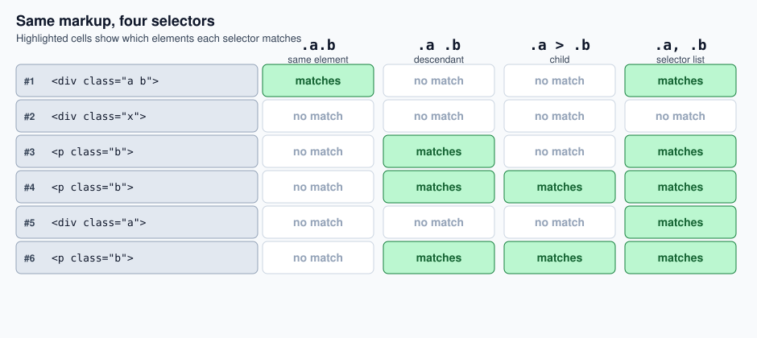

Selectors & Specificity
|
This content was generated with the assistance of AI and should be verified against the official documentation before being relied on in production. |
CSS selectors are how a stylesheet finds the elements it wants to style, ranging from a bare element type to
combinations that key off attributes, position among siblings, or interactive state. When more than one rule
targets the same element, the browser needs a way to decide which one wins — that mechanism is
specificity. This page works through the full range of selector types (element, class, ID, universal,
attribute, pseudo-class, pseudo-element, and the combinators that relate elements to one another),
specificity and !important, and then a "modern selectors" section covering native CSS nesting, :has(),
cascade layers, and scoped styles. Custom properties and media-query selection are covered separately in
CSS Custom Properties and Media Queries, and the box model referenced by several examples below is
covered in The Box Model.
Element, Class, and ID Selectors
Three selectors are used more than any other:
-
Element type — selects every instance of a tag. For example,
pselects all<p>elements. Other examples areh1,ul, anddiv. -
Class (
.) — selects elements carrying a givenclassattribute. Given<h1 class="heading">Heading</h1>, the.headingselector targets it. A class can be reused on any number of elements. -
ID (
#) — selects the single element carrying a givenidattribute. Given<div id="login"><!-- login content --></div>, the#loginselector targets it. Since anidmust be unique within a document, this selector matches at most one element.
p { color: #333; } /* element */
.heading { font-weight: bold; } /* class */
#login { border: 1px solid; } /* ID */Elements with multiple classes
The class attribute is not a single name but a space-separated list of class names. An element can carry as
many classes as needed, as in <div class="tarjeta destacado activo">, and each class can be targeted on its
own: .tarjeta, .destacado and .activo each match that div independently. As a consequence, the element
receives the declarations of every rule whose selector matches it, so styles from all three classes are
combined on the same element.
Class selectors can also be chained without whitespace to require several classes on the same element:
/* full selection: the element must carry all three classes */
.tarjeta.destacado.activo { outline: 2px solid gold; }
/* partial selection: tarjeta and activo, whatever other classes it carries */
.tarjeta.activo { opacity: 1; }
/* type plus classes: a div (type selector first) carrying all three classes */
div.tarjeta.destacado.activo { padding: 1.5rem; }The order in which the classes are written in the selector, and in the class attribute, is irrelevant, and
extra classes on the element never prevent a match. Given the following elements:
| HTML element | .tarjeta.destacado.activo |
.tarjeta.activo |
div.tarjeta.destacado.activo |
|---|---|---|---|
|
yes |
yes |
yes |
|
no |
yes |
no |
|
no |
yes |
no |
|
yes |
yes |
no (not a |
|
no |
no |
no |
When two matching rules set the same property with the same specificity, the rule that appears later in the
stylesheet wins. The position of a class within the class attribute plays no part: writing
class="activo tarjeta" instead of class="tarjeta activo" changes nothing.
A common way to use several classes is the base-and-modifier pattern, for example
<div class="card card--featured is-active">: card holds the shared styling, card--featured is a variant
and is-active is a state. The card--featured naming comes from BEM, covered in
Suffixing the parent selector for BEM. From JavaScript, prefer element.classList.add(),
remove(), toggle() and contains() to change a single class, because assigning element.className
replaces the whole list and discards the other classes.
The Universal Selector (*)
The universal selector, *, matches every element in the document. It is most often seen paired with the
inherit keyword to push a value down onto every descendant of a common ancestor — the canonical example
being the box-sizing reset also shown in web/html-css/box-model.adoc#_box-sizing:
html {
box-sizing: border-box;
}
*, *:before, *:after {
box-sizing: inherit;
}Here, box-sizing: border-box is set once on html and every element (and its :before/:after
pseudo-elements) inherits it via the universal selector.
Attribute Selectors
Attribute selectors, written in square brackets, match on the presence or value of an HTML attribute:
| Syntax | Matches |
|---|---|
|
Any element with that attribute present, regardless of value — |
|
An exact value match — |
|
A value that begins with the given string — |
|
A value that ends with the given string — |
|
A value containing the given string anywhere — |
Pseudo-Classes
A pseudo-class selects an element based on a state it is currently in, rather than anything present in the
markup itself. The syntax is a single colon (:) followed by a keyword.
Link states: the "LoVe HAte" order
The most common introduction to pseudo-classes is styling the four states of an anchor element:
-
:link— applied whenever an anchor has anhrefattribute. -
:visited— applied once the link has been visited. -
:hover— applied while the user is hovering over the link. -
:active— applied while the link is being clicked.
a:link, a:visited {
color: deepskyblue;
text-decoration: none;
}
a:hover, a:active {
color: hotpink;
text-decoration: dashed underline;
}The order these rules are written in matters, because later rules of equal specificity override earlier
ones in the cascade. Writing a:hover before a:link, for example, would cause the :link rule to win and
the hover effect would never be visible. The mnemonic for the correct order is LoVe HAte: Lo(:link),
V(:visited), H(:hover), A(:active).
Interactive and structural pseudo-classes
Beyond link states, some of the most useful pseudo-classes are:
-
Interactive state:
:checked(a checked checkbox/radio/option),:disabled(a disabled form control),:focus(the element currently holding keyboard focus). -
Structural (position among siblings):
:first-child,:last-child,:nth-child(),:nth-last-child(),:first-of-type,:last-of-type,:nth-of-type(),:nth-last-of-type().
:nth-child() accepts either a keyword (odd, even) or a functional notation such as 3n - 1, giving a
lot of flexibility for styling repeating patterns:
li:nth-child(3n - 1) {
background: skyblue;
color: white;
font-weight: bold;
}
li:nth-child(3n) {
background: deepskyblue;
color: white;
font-weight: bolder;
}Applied to a plain <ul> of seven <li> items, this colors every third item (starting from the 2nd)
skyblue, and every third item after that (the 3rd, 6th, …) deepskyblue, leaving the rest unstyled.
Pseudo-Elements
A pseudo-element, written with a double colon (::), selects a part of an element rather than the whole
element, letting you add stylistic content without adding markup to the HTML document. The available
pseudo-elements are ::before, ::after, ::first-letter, ::first-line, ::selection, and ::backdrop.
h1::first-letter {
font-size: 5rem; /* an oversized "drop cap" on the first letter of every h1 */
}Because pseudo-elements have no semantic value and are purely presentational, they should be used with care — they are ideal for decorative content (the < / > brackets around a label, a custom text-selection
highlight color via ::selection, or the backdrop behind a <dialog> via ::backdrop) but should never
carry content a user actually needs to read, since it is invisible to screen readers and to copy/paste.
Combining Selectors: Combinators
Selectors can be combined to refine a selection, and combinators express a relationship between two selectors based on the elements' position in the document tree:
| Combinator | Syntax | Selects |
|---|---|---|
Descendant |
|
Every |
Child |
|
Only the |
Adjacent sibling |
|
The single |
General sibling |
|
Every |
Selectors can also be combined without whitespace to intersect two conditions on the same element — for
example, li.primary selects only the li elements that also carry the primary class.
Combining two classes: .a.b, .a .b, .a > .b and .a, .b
Two class selectors can be joined in four different ways that look similar but select very different elements. All of them are compared here against the same markup, whose elements are numbered:
<div class="a b"> <!-- #1 -->
<div class="x"> <!-- #2 -->
<p class="b"> <!-- #3 -->
</div>
<p class="b"> <!-- #4 -->
</div>
<div class="a"> <!-- #5 -->
<p class="b"> <!-- #6 -->
</div>| Selector | Meaning | Selects | Matched elements |
|---|---|---|---|
|
Same element (AND) |
Elements carrying both |
#1 |
|
Descendant |
Elements with class |
#3, #4, #6 |
|
Child |
Elements with class |
#4, #6 |
|
Selector list (OR) |
Elements carrying |
#1, #3, #4, #5, #6 |

An accidental space is the most common error. .card.active selects an element carrying both classes,
while .card .active selects an .active element inside a .card. A stray space (or a missing one) silently
turns one into the other and the rule stops matching, with no error reported.
|
Adjacent sibling (+) vs. general sibling (~)
The distinction between + and ~ is easiest to see against a single list where one item carries a
.selected class:
li.selected + li {
background: deepskyblue;
color: white;
font-weight: bolder;
}
li.selected ~ li {
background: deepskyblue;
color: white;
font-weight: bolder;
}With +, only Item 5 matches — it is the single element immediately following .selected. With ~,
every later sibling (5, 6, and 7) matches, because ~ matches any following sibling, not just the
adjacent one. Combining a sibling combinator with a structural pseudo-class narrows this further — for
example, li.selected ~ li:nth-child(odd) selects only the odd-numbered items after the selected one.
CSS Specificity
When two rules target the same element and set the same property, specificity decides which one the browser applies. Specificity is commonly represented as a 4-value notation, a comma-separated list of integers where the leftmost value is the most significant:
| Position | Counts |
|---|---|
1st (highest) |
Inline |
2nd |
ID selectors ( |
3rd |
Class selectors ( |
4th (lowest) |
Element type selectors ( |
An inline style scores (1, 0, 0, 0). An ID selector alone scores (0, 1, 0, 0). A class selector alone
scores (0, 0, 1, 0). A bare element selector such as h1 scores (0, 0, 0, 1).
Worked examples
-
li.selected a[href]has two element selectors (li,a), one class selector (.selected), and one attribute selector ([href]) — specificity(0, 0, 2, 2). -
#newItem #mainHeading span.smallPrinthas two ID selectors, one class selector (.smallPrint), and one element selector (span) — specificity(0, 2, 1, 1).
Comparing the two, (0, 2, 1, 1) beats (0, 0, 2, 2) because the comparison works left to right: as soon as
one selector has a higher count at a given position, it wins outright, regardless of what follows. Two IDs
in the second selector settle the comparison before the class/element counts are even considered.
Chained classes
Every class in a chained selector adds one to the third position, so the more classes a selector requires, the higher its specificity:
-
.tarjeta.destacado.activohas three class selectors — specificity(0, 0, 3, 0). -
.tarjeta.activohas two class selectors — specificity(0, 0, 2, 0). -
div.tarjeta.destacado.activohas three class selectors and one element selector — specificity(0, 0, 3, 1).
Comparing them, .tarjeta.destacado.activo beats .tarjeta.activo because (0, 0, 3, 0) is higher than
(0, 0, 2, 0), and div.tarjeta.destacado.activo beats .tarjeta.activo because (0, 0, 3, 1) is higher than
(0, 0, 2, 0). Three chained classes still lose against a single ID: #main .tarjeta scores (0, 1, 1, 0), so
it beats .tarjeta.destacado.activo, (0, 0, 3, 0), since the ID position is compared first. Repeating a class,
as in .activo.activo, counts twice and is a known (if inelegant) way to raise specificity without adding an
ID.
The special case of !important
The !important keyword can be appended to any CSS declaration’s value. It effectively sets that
declaration’s specificity to (1, 0, 0, 0, 0) — a rank above even inline styles — so it takes precedence
over any other rule for that property, regardless of selector specificity.
div.media {
display: block;
width: 100%;
float: left;
}
.hide {
display: none;
}Given <div class="media hide">, it might look like .hide should win because it is declared second. But
by the specificity rules above, div.media scores (0, 0, 1, 1) while .hide scores only (0, 0, 1, 0) — so the display: block of div.media overrides the display: none of .hide, and the element is not hidden.
Writing class="hide media" instead makes no difference, because the order of the classes in the attribute has
no effect, and moving .hide later in the stylesheet helps only when both selectors have equal specificity.
Adding !important fixes this:
.hide {
display: none !important;
}This makes .hide reliably win regardless of what else targets the same element, which is exactly why
!important is reserved for small, single-purpose utility classes like this one — overusing it forces every
future override to reach for !important as well, defeating the purpose of specificity in the first place.
Modern Selectors
CSS has recently gained several features that change how selectors are organized and composed, rather than
adding new individual selector syntax: native nesting, the :has() relational selector, cascade layers, and
scoped styles.
Native CSS nesting
Nesting lets you group related selectors the way Sass has long allowed, instead of repeating a shared prefix on every line:
/* traditional, flat selectors */
.menu {}
.menu li {}
.menu li a {}
/* the same relationship, nested */
.menu {
li {
a {
/* styles for anchor elements inside list items */
}
}
}A child selector can also be written explicitly with the & nesting selector, which stands for "the parent
selector" and is required when the nested selector doesn’t start with a combinator, a class, or an ID (for
example, when combining with a pseudo-class):
.article {
font-family: Arial, sans-serif;
& .title {
font-size: 2rem;
font-weight: bold;
}
}
.button {
background-color: blue;
color: white;
&:hover {
background-color: darkblue;
}
}The & also controls how a nested class combines with its parent. Inside .tarjeta { }, &.activo
compiles to .tarjeta.activo (the same element carries both classes), whereas & .activo and a bare
.activo both compile to .tarjeta .activo (an .activo descendant):
.tarjeta {
&.activo { outline: 2px solid gold; } /* .tarjeta.activo */
& .activo { color: green; } /* .tarjeta .activo */
.activo { color: green; } /* .tarjeta .activo */
}Nesting also supports at-rules such as media and container queries directly inside a rule, instead of wrapping the whole rule in a separate block:
.sidebar {
width: 100%;
padding: 1rem;
@media (min-width: 600px) {
width: 250px;
}
}Because the nested styles live alongside the component they belong to, removing a component’s markup lets you delete its entire style block in one place, instead of hunting for related selectors scattered elsewhere in the stylesheet.
The :has() relational selector
:has() is a functional pseudo-class that selects an element if any of the relative selectors passed to it
match at least one element within (or, via a leading combinator, relative to) it — effectively a
"parent selector" or "previous sibling selector", which CSS previously had no way to express.
/* select an h2 that is immediately followed by an img, and style the h2 itself */
h2:has(+ img) {
color: red;
}
/* style a .card based on a property of one of its own children */
.card:has(.highlight) {
border: 2px solid #ff9800;
background-color: #fff8e1;
}Given
<div class="card">
<h2>Card Title 1</h2>
<p>This is a regular paragraph without highlighting.</p>
</div>
<div class="card">
<h2>Card Title 2</h2>
<p class="highlight">This paragraph is highlighted with special styling.</p>
</div>only the second .card gets the border and background, because only it contains a .highlight descendant.
:has() cannot be nested inside another :has(), and pseudo-elements cannot appear as selectors within it
or serve as its anchor.
AND / OR composition
:has() also accepts more than one condition:
-
OR: comma-separated selectors inside a single
:has()match if any of them are present —x:has(a, b)stylesxif it contains either anadescendant or abdescendant. -
Chained classes: the argument can itself be a compound selector —
.card:has(.a.b)styles a.cardcontaining a single descendant that carries bothaandb, whereas.card:has(.a):has(.b)is also satisfied whenaandbare on different descendants. -
AND: chaining multiple
:has()calls matches only if all of them are present —x:has(a):has(b)stylesxonly if it contains both anadescendant and abdescendant.
Cascade layers (@layer)
@layer addresses the specificity problem from a different angle: instead of relying on selector
specificity alone, you explicitly declare named layers, and layer order takes priority over selector
specificity when resolving conflicts between layers.
@layer base {
a {
font-weight: bold;
color: black; /* ignored: theme layer takes precedence */
}
.nav-link {
color: blue; /* ignored: theme layer takes precedence */
}
}
@layer theme {
a {
color: purple; /* wins: styles all links */
}
}
@layer special {
.accent {
color: orange; /* wins: styles all .accent elements */
}
}Even though .nav-link has higher selector-level specificity than the bare a selector, the theme layer’s
a { color: purple } still wins over the base layer’s .nav-link { color: blue }, because layer order is
consulted before specificity. Layer precedence is determined by the order in which layer names are first
declared — you can reverse it explicitly:
@layer special, theme, base;With this ordering, the base layer now takes precedence over theme, so links revert to black (and
.nav-link ones to blue) — adjusting layer order is therefore a way to manage which whole groups of
styles take precedence, without touching individual selectors.
Scoped styles (@scope)
@scope limits where a set of CSS rules applies, encapsulating a rule so it only affects a specific
subtree instead of the whole document — addressing the same problem naming conventions (like BEM) and
CSS-in-JS libraries have traditionally solved without native browser support.
@scope (.card) {
.title {
font-weight: bold;
}
}Here, .title only matches inside a .card, so it can’t clash with unrelated .title elements elsewhere on
the page. The full syntax also accepts a lower bound:
@scope (<scope-start>) [to (<scope-end>)] {
/* rules go here */
}<scope-start> is the scoping root (the upper bound); the optional to (<scope-end>) narrows the scope
further by excluding everything from the named lower-bound selector downward:
@scope (.media-object) to (.content > *) {
img {
border-radius: 50%;
}
.content {
padding: 1em;
}
}img only matches images within a .media-object, and .content is styled, but styling stops at the
.content > * boundary — the direct children of .content are excluded from the scope, so nested
components inside .content are free to define their own, unrelated styles without being caught by this
rule.